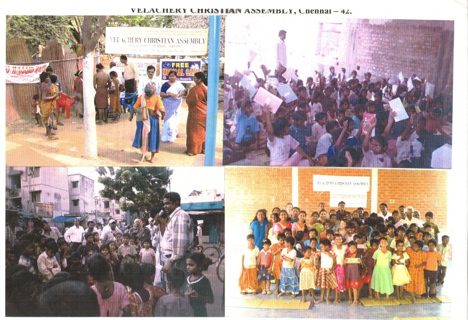

Good Samaritan is a registered charitable Trust working at Velachery, Chennai since 2001.
Down Troddan live in the society without much support and care. They make decision to commit suicide due to the negligence of society
We hear such news daily through media like news papers, magazines, They are in need of care and concern. So the trustees had the vision to extend their support for their survival.
Please visit the Home Page of the Good Samaritan

Merciful Thought: Born to live and born to win in the world. Live, let others live in the society. "Extend support to those Who are in need".